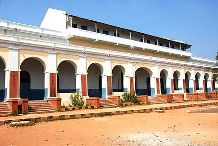

1st to 12th Grade- K. V. Tirumalagiri

K. V. Tirumalagiri was my where I spent my entire school life, and it was a really great time of life that I had. K. V. Tirumalagiri is located in Trimulgherry, Secunderabad, Telangana ,India